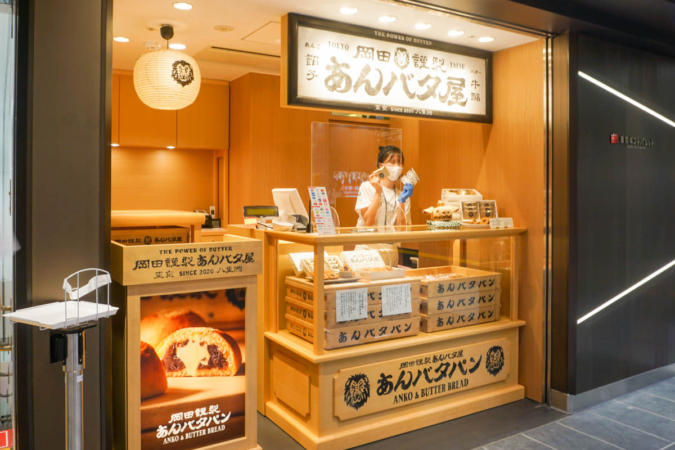

2022/03/02
東京駅
1～2時間の滞在の予定(13:30～15:30)
気になるところ
1. 駅舎
2012年に丸の内側は100年前の東京駅を再現した「丸の内駅舎」があり、
その反対側の八重洲口は近代的な「グランルーフ」があるみたい

2. 東京キャラクターストリート
フロアガイド
 下記の3つはぜひ行きたい!
下記の3つはぜひ行きたい!
B1F
ほかに気になるところあったらいく!
2.1 ポケモンストア
「ポケモンカジュアルショップ」のコンセプトのもと、「ポケモンセンター」で取り扱う5,000種以上の商品から、
品揃えを再編集した小型店。
東京駅ならではの電車をモチーフにしたポケモングッズを取り扱います。

2.2 ミッフィースタイル
『miffy style』は、キデイランドとディック・ブルーナ・ジャパンのコラボレーションによるニュースタイルのオフィシャルショップ。

2.3 ムーミンショップ ミニ
北欧文化やデザインを象徴するアイコン「ムーミン」。
そのストーリーと原作アートの魅力を取り入れたインテリアや雑貨を揃え、
居心地の良い「ムーミンなくらし」を提案するオフィシャルブランドショップです。
2.4 東京おかしランド
「ぐりこ・や Kitchen」「森永のおかしなおかし屋さん」「カルビープラス」が集まり、
「日本初」のお菓子をテーマとしたゾーンとして2012年4月にオープン。
東京キャラクターストリートの横にあるっぽいからいってみたい
3. 東京ギフトパレット
3.1 岡田勤製あんバタ屋
懐かしいけど新しいあんバタースイーツ”をコンセプトに、
「あんバタフィナンシェ」と「あんバタパン」を販売しています。

3.2 BAKERS gonna BAKE「スコーン」
店内で焼き上げたスコーンが人気のベイクショップ。
朝食やおやつにピッタリのスコーンがたくさん売られています！

3.3 ネコシェフ「フィナンシェ＆クッキーアソート」
森にたたずむチーズ工房を住みかにする猫・ネコシェフはお菓子作りが大好き。
「ネコシェフ」はそんなストーリーを背景にしたチーズと果実のお菓子ブランド。